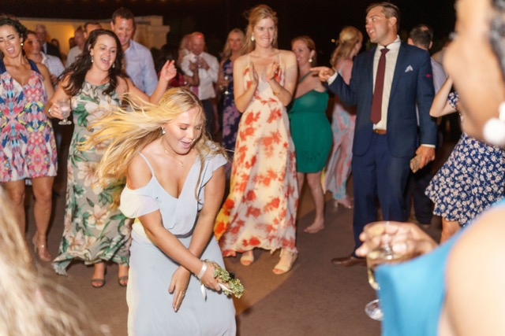

Professional DJ services, photobooths, special effects & more for weddings, corporate events, proms, and private parties throughout St. Augustine, St. Johns County, Ponte Vedra, Nocatee, Palm Coast & beyond. Locally trusted since 1997 — nearly 30 years serving Florida’s Historic Coast.
From the Historic District to Ponte Vedra Beach, from Nocatee to Palm Coast — we’ve been making St. Augustine area events unforgettable for nearly three decades

Historic City. Modern Entertainment. Timeless Memories.
St. Augustine is one of the most sought-after wedding and event destinations in Florida — and Footloose Entertainment has been part of that story since 1997. We know St. Augustine’s venues, we know the Historic District’s logistical quirks, and we know how to create spectacular entertainment in spaces ranging from The White Room’s rooftop Loft to the grand Treasury on the Plaza ballroom to intimate private estates throughout St. Johns County. Whether you’re planning a destination wedding in the nation’s oldest city, a corporate retreat along the Intracoastal, a prom at a St. Johns County school, or a milestone birthday party in Nocatee, Footloose Entertainment brings the professionalism, experience, and energy your St. Augustine event deserves.
Everything you need for an unforgettable St. Augustine event — from one trusted company
Expert wedding DJs who know St. Augustine’s most iconic venues. From intimate Historic District ceremonies to grand waterfront receptions, we craft the perfect soundtrack for your St. Augustine wedding.
Learn More →Professional DJ and entertainment for St. Augustine corporate retreats, galas, product launches, and company parties throughout St. Johns County and the Historic Coast.
Learn More →Trusted by St. Johns County schools for proms, homecoming dances, and school events. Background-checked staff, age-appropriate entertainment, and experiences students never forget.
Learn More →Birthdays, anniversaries, quinceañeras, and milestone celebrations throughout St. Augustine, Nocatee, Ponte Vedra, and St. Johns County.
Learn More →The most-shared entertainment at St. Augustine weddings and events. Slow-motion 360-degree videos with custom overlays delivered instantly to your guests’ phones.
Learn More →An elegant full-length interactive mirror that complements St. Augustine’s most beautiful venues. Instant prints or digital delivery for weddings, galas & celebrations.
Learn More →Cold sparklers for your first dance at The White Room. Dancing on clouds at Treasury on the Plaza. CO2 jets and more — professionally executed at St. Augustine’s finest venues.
Learn More →Capture every voice from your St. Augustine celebration. A vintage telephone your guests pick up and leave a heartfelt message you’ll treasure for a lifetime.
Learn More →Serving all of St. Johns County and Florida’s Historic Coast
Don’t see your area? We travel throughout Northeast Florida. Contact us to confirm availability for your location.
Nearly 30 years of performing at St. Augustine’s most iconic and sought-after event venues
Nearly 30 years of experience at St. Augustine’s most sought-after venues means fewer surprises and flawless execution on your day
The White Room is St. Augustine’s most iconic wedding venue — and one we know deeply. Whether you’re hosting in the rooftop Loft with its sweeping bay views or in the intimate Villa Blanca chapel and reception space, we understand the acoustics, load-in logistics, and coordination protocols that make your event run seamlessly. Cold sparklers during your first dance, a 360 booth for guests, and DJ services that honor the elegance of the space — we do it all here regularly.
The grand ballroom at Treasury on the Plaza demands entertainment at the highest level — and that’s exactly what Footloose delivers. We’ve performed here numerous times, perfecting the transition from ceremony to cocktail hour to reception in this stunning Flagler-era space. Our dancing on clouds effect under the Treasury’s ornate ceiling is nothing short of breathtaking. Ask couples who’ve celebrated here — the combination is unforgettable.
Moorish Revival architecture, intimate ballrooms, and St. Augustine’s most distinctive Historic District address — Casa Monica Hotel events call for entertainment that matches the venue’s sophistication. Our DJs expertly set the tone across cocktail hour and reception, and our mirror photo booth fits beautifully in Casa Monica’s elegant spaces, giving guests a keepsake that matches the grandeur of the setting.
Few event venues in Florida match the Lightner Museum’s combination of Victorian opulence and Historic District charm. Weddings and galas here set an impossibly high bar for ambiance — and our entertainment rises to meet it. We’ve coordinated audio for ceremonies in the courtyard and receptions in the Grand Ballroom, always navigating the venue’s unique requirements with care and precision.
North of the city, Ponte Vedra’s resort venues attract corporate retreats, golf events, and upscale weddings that demand polished, professional entertainment. We’ve served events at Ponte Vedra Inn & Club and TPC Sawgrass many times and understand the elevated expectations that come with these world-class facilities — from professional MC services to seamlessly integrated photobooth activations for networking events.
Nocatee’s rapid growth has brought outstanding event venues like Crosswater Hall and a growing collection of private estates to St. Johns County. We serve Nocatee, Palm Coast, and all St. Johns County communities regularly — bringing the same level of service to neighborhood celebrations and landmark venues alike. If your venue isn’t listed, we almost certainly know it. Ask us.
St. Augustine is unlike any other market in Florida. The Historic District’s narrow streets, the strict noise ordinances, the load-in logistics at waterfront venues — we’ve navigated all of it hundreds of times. When you book Footloose for your St. Augustine event, you’re getting a team that has already solved every challenge your venue presents, so your day runs flawlessly.
From the rooftop Loft at The White Room to the grand ballroom at Treasury on the Plaza to private estate parties in Nocatee, we bring the same level of preparation and professionalism to every St. Augustine event we serve.
St. Augustine is one of Florida’s most sought-after wedding destinations, and for nearly 30 years Footloose Entertainment has been the trusted choice for couples who want their wedding entertainment to match the beauty of the city. We understand the romance of a St. Augustine wedding and the unique expectations that come with it — and we exceed them every time.
Our wedding DJs are experienced MCs who coordinate with your photographer, planner, and venue staff to ensure every moment flows perfectly from ceremony to last dance.
DJ, 360 booth, mirror booth, special effects, audio guestbook — we offer everything under one roof. St. Augustine couples and event planners who book multiple services with Footloose get seamless coordination between every element, one point of contact for everything, and the peace of mind that comes from working with a company that has been delivering excellence in this market for nearly 30 years.
Real reviews from real St. Augustine events
“We had our dream wedding at The White Room and Footloose made the entertainment absolutely perfect. Our DJ was professional, read the room beautifully all night, and the 360 booth was the most-talked-about thing at our reception. Our guests are still sharing their videos months later. Footloose is the best in St. Augustine.”
“We used Footloose for our wedding at Treasury on the Plaza and the dancing on clouds effect during our first dance was absolutely breathtaking. Every single guest was in awe. The DJ kept the dance floor packed all night and the cold sparklers during our send-off were the perfect ending to a perfect night.”
“Footloose has handled entertainment for our St. Johns County school events for years and they are absolutely the gold standard. Reliable, professional, great with students, and they always bring the energy. Our students look forward to the events Footloose DJs every single year.”
Common questions from St. Augustine clients
Yes — Footloose Entertainment has been providing professional DJ services in St. Augustine since 1997. We regularly perform at St. Augustine’s most sought-after venues including The White Room, Treasury on the Plaza, Casa Monica Hotel, and many others throughout St. Johns County and the surrounding area.
Yes — The White Room is one of our most frequently booked St. Augustine venues. We are experienced with both the Villa Blanca and Loft venues and work seamlessly with The White Room’s coordination team to ensure flawless execution on your wedding day.
We serve all of St. Augustine and St. Johns County including Ponte Vedra Beach, Nocatee, Palm Coast, and Flagler Beach. We also regularly serve Jacksonville and all of Northeast Florida. Contact us to confirm travel availability for your specific venue.
It’s simple: submit a quote request through our website or call us at (904) 854-8014. We’ll follow up quickly to discuss your event details, confirm availability, and provide a customized quote. Once you’re ready to move forward, we’ll send a contract and collect a deposit to secure your date. The process is straightforward with no hidden fees or last-minute surprises.
Yes — we regularly serve Ponte Vedra Beach, Nocatee, Palm Coast, Flagler Beach, and all communities throughout St. Johns and Flagler Counties. We’ve performed at TPC Sawgrass, Ponte Vedra Inn & Club, Nocatee Crosswater Hall, and many venues in these areas. Our coverage extends throughout all of Northeast Florida, so if your venue isn’t on our list, just ask.
Absolutely. We bring redundant sound systems and backup equipment to every event. In nearly 30 years of operation, we’ve built our systems and protocols specifically to prevent and handle any technical issue — so your St. Augustine event never skips a beat.
Yes — we encourage guest requests and work with you beforehand to establish any do-not-play lists or must-play songs. Our DJs are skilled at reading the crowd and blending requests naturally into the flow of your St. Augustine event so the energy stays high all night long.
Absolutely — combining DJ and photobooth services is one of our most popular options for St. Augustine weddings. One company means seamless coordination, one point of contact, and better combined value. We offer 360 video booths, mirror booths, open air booths, digital booths, and more alongside our DJ services.
St. Augustine is an extremely popular wedding destination and dates fill quickly — especially spring, fall, and holiday weekends. We recommend booking as early as possible, ideally 12–18 months in advance for peak season dates. Contact us to check availability for your date.
Explore our services tailored to your specific event type
DJ, photobooth, 360 booth, special effects & more for your St. Augustine wedding day.
View Wedding Services →Professional DJ and entertainment for St. Augustine corporate retreats, galas & company events.
View Corporate Services →Trusted by St. Johns County schools for proms, homecoming & school dances.
View School Services →Birthdays, anniversaries & milestone celebrations throughout St. Augustine & St. Johns County.
View Party Services →We work hand-in-hand with St. Augustine’s top venues to deliver seamless event experiences for their clients
After nearly 30 years serving St. Augustine’s event community, Footloose Entertainment has built strong relationships with the venues, planners, and coordinators that make this market run. We understand what venue managers need from their entertainment vendors: reliability, professionalism, seamless load-in and load-out, and zero surprises on event day.
Whether you’re a venue coordinator looking to add trusted entertainment vendors to your preferred list, a planner building out your Rolodex of St. Augustine specialists, or a couple whose venue has recommended working with us — we welcome the conversation. Our preferred vendor relationships with venues throughout the Historic District, Ponte Vedra Beach, Nocatee, and Palm Coast are built on a simple foundation: we make your venue look great every single time.
St. Augustine dates fill fast — especially wedding season and holiday weekends. Request your free quote today and let’s make your St. Augustine event unforgettable.
Serving St. Augustine since 1997 • $1M insured • Five-star rated • Quick response guaranteed